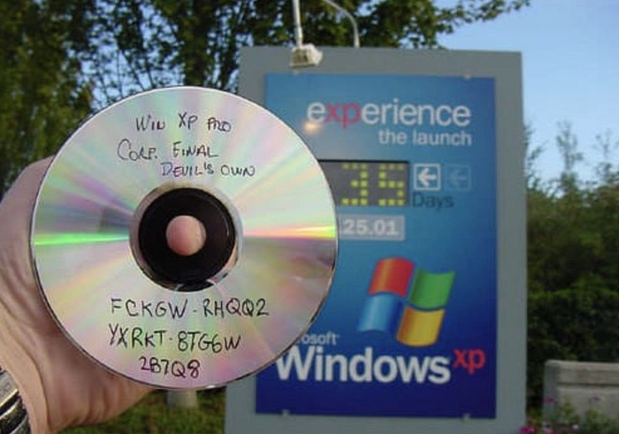

Die Nerd Enzyklopädie 14 - FCKGW-RHQQ2-YXRKT-8TG6W-2B7Q8
Hätte ich diese Zeichenfolge vor 20 Jahren veröffentlicht, würde morgen vermutlich der Staatsanwalt an meine Tür klopfen. Heute kann ich damit ein T-Shirt bedrucken und beim Verband der Software-Industrie sorglos über die Flure flanieren.
Es handelt sich hierbei um einen Lizenzschlüssel, der Ende der 1990er Jahre zu zweifelhafter Berühmtheit gelangte. Die Software-Industrie versuchte (damals wie auch heute) ihre Produkte mit Lizenzschlüsseln vor unerwünschten Kopien zu schützen. Diese mussten beim ersten Start der Software eingegeben werden, um das Programm nutzen zu können. So auch beim Betriebsystem Windows XP, das am 28. August 2001 erschien. Microsoft verteilte dafür unter anderem auch sogenannte Volumen-Lizenzschlüssel, die Unternehmen nutzen konnten, um gleich mehrere Kopien von Windows zu aktivieren.
Der Hacker-Gruppe devil’s0wn gelang 35 Tage vor dem offiziellen Start von Windows XP der Coup schlechthin: Sie gelangten an eine Kopie des Betriebssystem und brachten diese zusammen mit dem funktionierenden Volumen-Lizenzschlüssel FCKGW-RHQQ2-YXRKT-8TG6W-2B7Q8 in Umlauf.
Das Foto einer selbstgebrannten CD und diesem Schlüssel machte im Internet die Runde und kann durchaus als Mittelfinger in Richtung Microsoft gedeutet werden:

Microsoft reagierte relativ spät und setzte den Schlüssel erst im August 2004 auf eine Blockier-Liste, um die weitere Nutzung zu unterbinden. Die Zeichenfolge sicherte sich trotzdem einen Platz in der IT-Popkultur und wird mittlerweile sogar auf T-Shirts vertrieben.
Andere berühmte Lizenzschlüssel sind z.B. die 111–1111111 und die 000–0000007 für Window 95. Die Mechanismen, um die Gültigkeit von Lizenzschlüsseln zu bewerten, waren damals noch nicht sehr ausgereift. Heutzutage muss man die Software aufwendig aktivieren oder benötigt eine Internetverbindung, um die Rechtmäßigkeit der Kopie prüfen zu können. In Windows 95 gab es ein paar einfache Regeln, nach denen der Lizenzschlüssel überprüft wurde. Im Prinzip bestand der Schlüssel nur aus einer Datumsangabe und einer Zahl, deren Quersumme 7 ergibt [INFOS1]. Natürlich gab es auch Ausnahmen, so wurden auch 10 mal die 1 oder die James-Bond-Zeichenfolge akzeptiert.
Mittlerweile sind die Methoden der Software-Industrie weitaus ausgefeilter. So kann z.B. über eine ständige Internet-Verbindung die Validität geprüft werden. Oder es gibt Launcher, die die jeweilige Software starten und den Lizenz-Status überwachen.